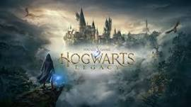

Hogwarts Legacy
Genre: Fantasy
Rating: ⭐⭐⭐
If you like Harry Potter, you would like this game. You travle around the map to complete quest and it's based on the Harry Potter movies. I gave the game 3 stars because the game was hard. I wish the game helped you more.